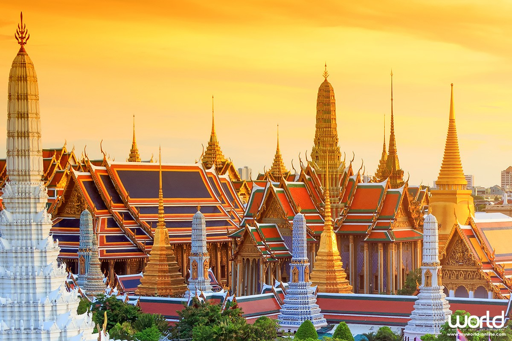

ในสมัยกรุงศรีอยุธยานั่น กรุงเทพฯ ยังเป็นเพียงเมืองการค้าขนาดเล็ก อยู่ที่ปากแม่น้ำเจ้าพระยา แต่ต่อมาหลังจากการสถาปนาเมืองหลวงใหม่ ทำให้กรุงเทพฯ เป็นที่ตั้งของ 2 เมืองหลวงที่สำคัญก็คือ กรุงธนบุรี และ กรุงรัตนโกสินทร์ ทำให้กรุงเทพฯ เติบโต และกลายเป็นหัวใจสำคัญของประเทศ
หลังสิ้นรัชสมัยของ สมเด็จพระเจ้าตากสิน หรือ พระเจ้ากรุงธนบุรี ได้มีการสถาปนา กรุงรัตนโกสินทร์ ขึ้นเป็น เมืองหลวงของประเทศไทย ในวันที่ 21 เมษายน พ.ศ.2325 ในรัชสมัยของ พระบาทสมเด็จพระพุทธยอดฟ้าจุฬาโลก ซึ่งปราบดาภิเษกเป็นปฐมกษัตริย์แห่งราชวงศ์จักรี เนื่องจาก กรุงธนบุรี เมืองหลวงเดิม มีความคับแคบ และไม่ต้องด้วยหลักพิชัยสงคราม ทำให้ กรุงเทพมหานคร กลายเป็นเมืองหลวงมาจนถึงปัจจุบัน
และเมื่อวันที่ 21 ธันวาคม พ.ศ.2514 รัฐบาลจอมพลถนอม กิตติขจร ได้รวม จังหวัดพระนคร และ จังหวัดธนบุรี เข้าด้วยกันเป็น นครหลวงกรุงเทพธนบุรี และภายหลังการปรับปรุงการปกครองเมื่อวันที่ 14 ธันวาคม พ.ศ.2515 จึงได้เปลี่ยนเป็นชื่อเป็น กรุงเทพมหานคร
อีกทั้งในปัจจุบัน กรุงเทพมหานคร เป็นเขตปกครองพิเศษของประเทศไทย ไม่ได้มีสถานะเป็นจังหวัดเป็นจังหวัดอื่นๆ กรุงเทพมหานคร มีการเลือกตั้งผู้บริหารท้องถิ่นโดยตรง
